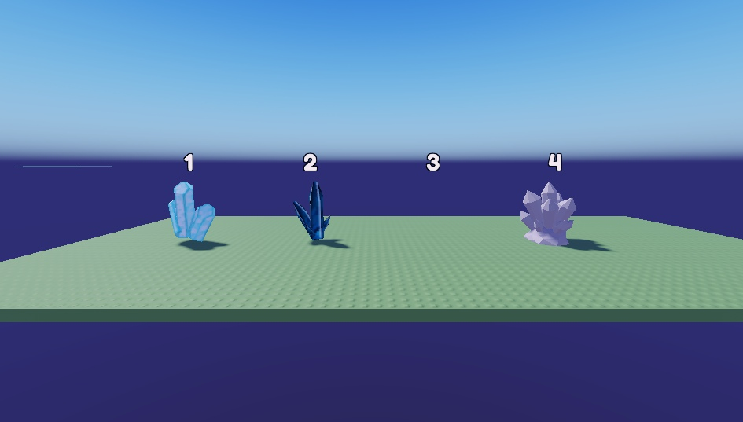
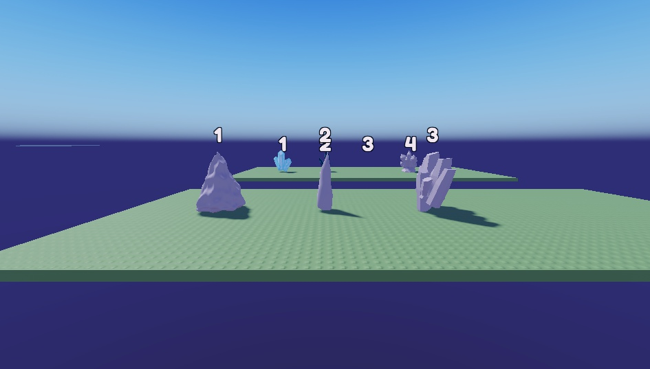
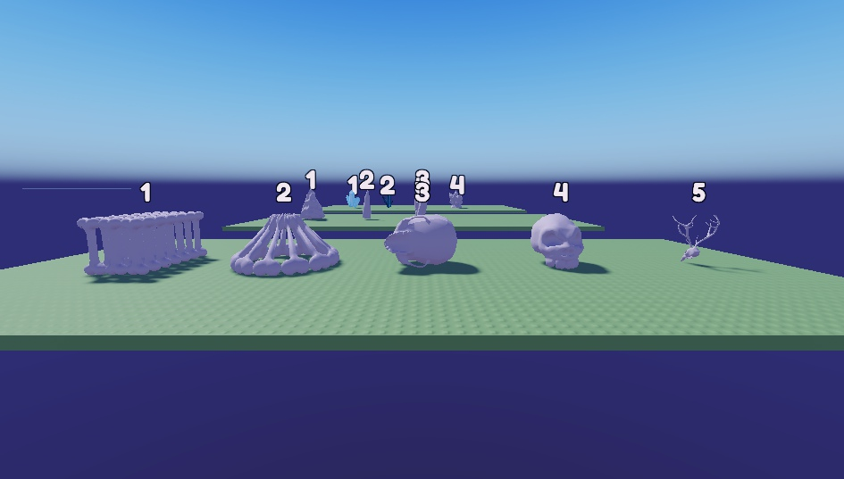
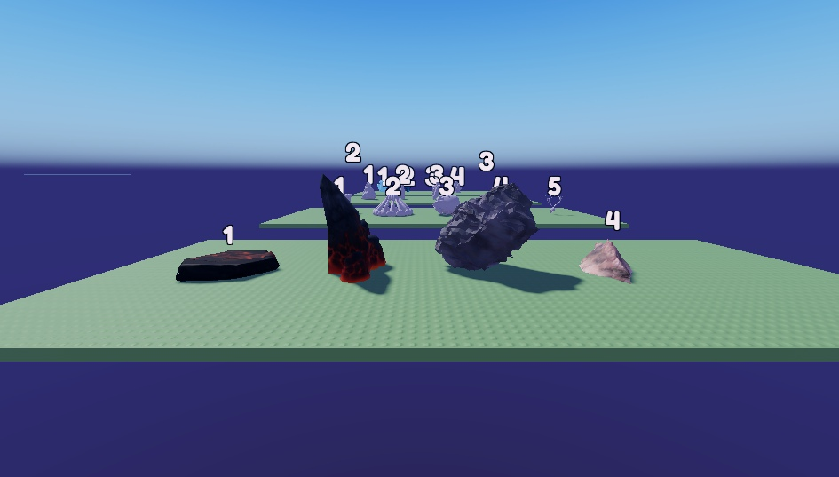
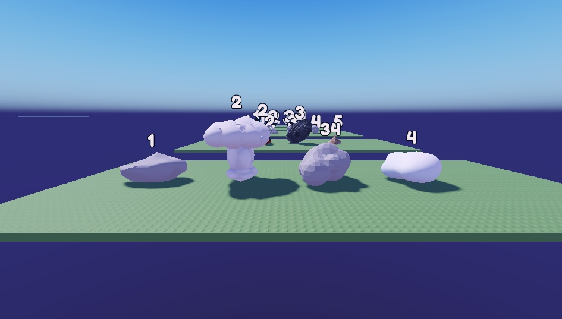

De vrais modèles gratuits de la boutique Roblox, comme la citrouille. Beaucoup n'ont pas de texture (gris) : je leur donne la couleur et la matière du thème (glace transparente, os beige, cristal violet qui brille…). Regarde surtout la FORME. Au fond des images, on voit les autres rangées : ne regarde que la rangée du devant.

Grotte des Fantômes · cristaux
1 : deux prismes de quartz · 2 : pointes fines bleu foncé · 4 : grappe de cristaux taillésMon conseil : 4 (en violet), avec des 1 plus petits entre eux.

Royaume des Glaces · glace
1 : bloc d'iceberg · 2 : grand pic (stalagmite) · 3 : plaque de cristaux à platMon conseil : 1 pour le mur, et des 2 en pics de glace.

Bois des Ombres · os et crânes
1 : rangée d'os · 2 : cage de côtes · 3 : crâne de bête · 4 : crâne humain · 5 : crâne à bois de cerfMon conseil : 2 pour le mur (cage de côtes), avec des 4 au pied.

Volcan · roche et lave
1 : dalle de lave · 2 : grande pointe de roche à lave rouge · 3 : gros rocher noir · 4 : rocher clairMon conseil : 2 (déjà texturé avec de la lave) en alternance avec des 3.

Royaume Céleste · nuages
1 : nuage plat · 2 : nuage en champignon · 3 : nuage en boule · 4 : nuage moelleux allongéMon conseil : 4, empilés en mur.